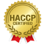

Wij streven naar een zo'n milieu vriendelijk mogelijke weize te bestrijden met onze bestrijdingsmiddelen, echter wel met behoud van een goed resultaat, zodat wij het milieu zo min mogelijk belasten. Dit houdt in dat wij in de eerste plaats weringen en blokkades tegen ongedierte zullen uitvoeren, zodat nieuwe infecties dan wel uitbreiding zoveel mogelijk wordt voorkomen.
Wij zijn in 2003 gestart en inmiddels met goed resultaat de recessie voorbij en zelfs verder gegroeid. Dit is niet in de laatste plaats te danken aan onze snelle service en onze klantgerichtheid.
Fa. Roggeveen is kostenbewust en voert de voor het bedrijf belangrijkste activiteiten zoals inkoop, logistiek, automatisering, administratie en reclame in eigen beheer uit. Hierdoor houden wij de kosten laag. Dat levert ondanks lage consumentenprijzen een goed rendement op.
Handelen met respect voor mens en milieu, dat is de uitdaging waar Ongedierteservicel zich voor gesteld heeft. Steeds zorgvuldig de afweging maken of wat je doet ook echt wel nodig is en of je het op de beste manier aanpakt.
In onze dagelijkse praktijk ziet dat er als volgt uit:
Wij werken voor: